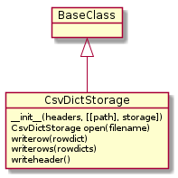

Although python already has a csv-writer in order to make be able to drop it into the places where the regular file storage is expected I need to add an adapter around it.
# python standard library
import copy
import csv
from types import DictType
# the tuna
from tuna import BaseClass
from tuna import TunaError
import tuna.parts.storage.filestorage
- Maintains file (and file path)
- Writes header to file before beginning data-writing
- adds writerow method to the normal storage that takes a dictionary of ‘column’:’value’ pairs.
- csv.DictWriter
- Storage
The constructor accepts three parameters:
- headers: a list of column headers (required for the DictWriter)
- path: A string path to save files to (folder-level only, the open method takes the filename as an argument)
- storage: A file-like writeable object
Either path or storage is required, if the storage isn’t given one will be created frome the path.
This follows (more or less) the open method for the regular file-storage in that it returns a copy if itself but with the storage replaced with a copy that has the filename passed in as an argument and the writer attribute set to a csv.DictWriter.
The Path:
- Copy self
- Open file
- Create DictWriter with opened file and self.headers
- Write the headers
- Set copy of self’s storage to opened file
- Set copy of self’s writer to created DictWriter
- Return copy of self
This is a pass-through to the DictWriter’s writerow method.
csv.DictWriter.writerow(rowdict) |
class CsvDictStorage(BaseClass):
"""
A storage that writes to csv files
"""
def __init__(self, headers,
path=None, storage=None):
"""
CsvDictStorage constructor
:param:
- `path`: path to folder to store output-file in
- `storage`: file-like object to use instead of creating one from 'path'
- `headers`: list of column headers in order required
:raises: TunaError if neither `path` nor `storage` given
"""
super(CsvDictStorage, self).__init__()
self.path = path
self.headers = headers
self._storage = storage
self._writer = None
if not any((self.path, self._storage)):
raise TunaError("Path or storage needed.")
return
@property
def storage(self):
"""
A file-storage created from the path (unless passed into constructor)
:return: FileStorage
"""
if self._storage is None:
self._storage = tuna.parts.storage.filestorage.FileStorage(path=self.path)
return self._storage
@storage.setter
def storage(self, new_storage):
"""
Sets the storage to what's passed in
:param:
- `new_storage`: Storage instance to give the DictWriter
"""
self._storage = new_storage
return
@property
def writer(self):
"""
DictWriter instance (creates it if not set)
:postcondition: if dictwriter created, header written to file
:raise: TunaError if not set and storage not writeable
"""
if self._writer is None:
if self.storage.closed or not self.storage.mode.startswith('w'):
raise TunaError("FileStorage not open")
self._writer = csv.DictWriter(self.storage,
self.headers)
# assume this is a new file
self._writer.writeheader()
return self._writer
def open(self, filename):
"""
Opens the filename as a DictWriter
:param:
- `filename`: the name of the file to open
:postcondition: header written to file
:return: copy of self with open DictWriter as `writer`
"""
new_writer = copy.copy(self)
open_file = self.storage.open(filename)
# DictWriter doesn't like keyword arguments
new_writer._writer = csv.DictWriter(open_file,
self.headers)
new_writer.writer.writeheader()
return new_writer
def writerow(self, rowdict):
"""
Writes the row to storage
:param:
- `rowdict`: dict whose keys match the headers
:raise: TunaError if keys don't match header or invalid data was passed in.
"""
try:
self.writer.writerow(rowdict=rowdict)
except ValueError as error:
self.logger.error(error)
raise TunaError("rowdict keys invalid")
except TypeError as error:
if type(rowdict) is not DictType:
raise TunaError("rowdict not `header:data` dict ({0})".format(rowdict))
self.logger.debug(error)
self.logger.error(("key in ({0}) not in header ({1}) "
"and non-string in data ({2})").format(rowdict.keys(),
self.headers,
rowdict.values()))
raise TunaError("rowdict keys and values invalid")
return
def writerows(self, rowdicts):
"""
Writes each dictionary in rowdicts to the csv
:param:
- `rowdicts`: iterable collection of dictionaries
:raise: TunaError (see writerow)
"""
for rowdict in rowdicts:
self.writerow(rowdict)
return
CsvDictStorage |
|
CsvDictStorage.open |
|
CsvDictStorage.writerow |
|
CsvDictStorage.writerows |
